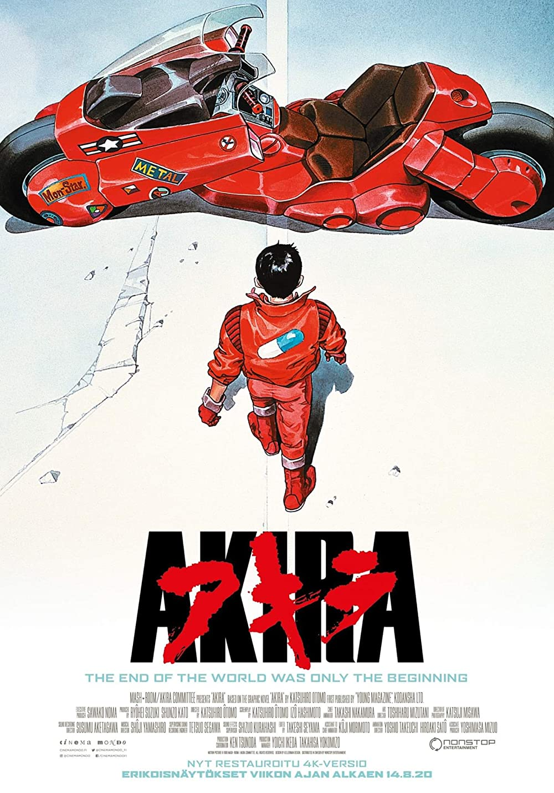
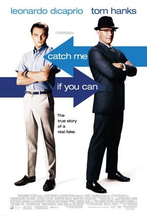
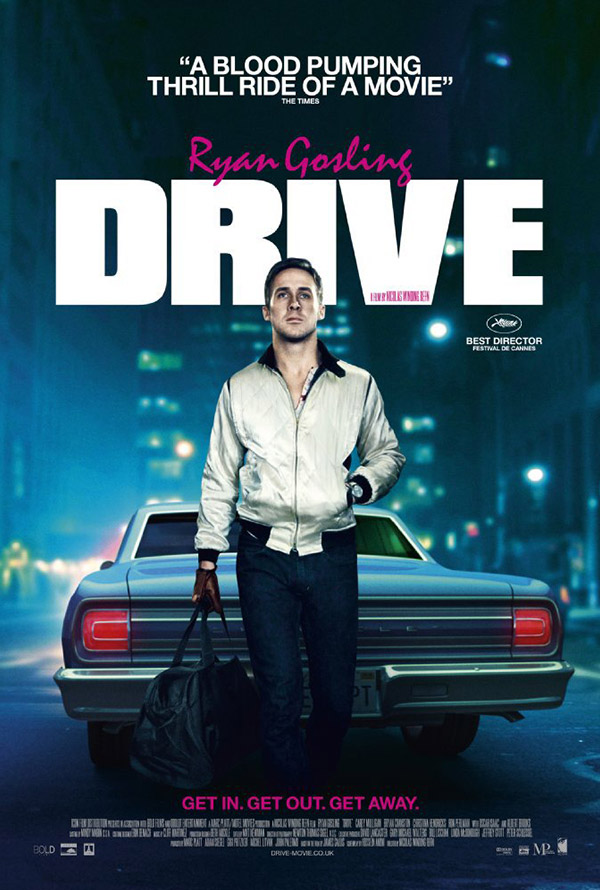
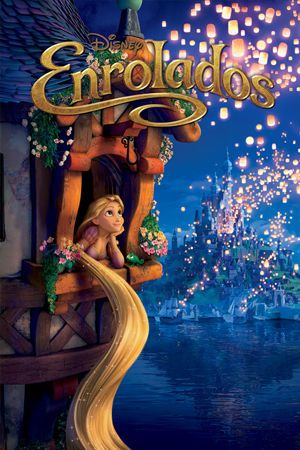

Uma enorme explosão fez com que Tóquio fosse destruída em 1988. Em seu lugar foi construída Neo Tóquio, que, em 2019, sofre com atentados terroristas por toda a cidade. Os amigos Kaneda e Tetsuo integram uma gangue de motoqueiros. Eles disputam rachas violentos com uma gangue rival, os Palhaços, até que um dia Tetsuo encontra Takashi, uma estranha criança com poderes que fugiu do hospital onde era mantido como cobaia.
O mundo, em 2029, se tornou um local altamente informatizado, a ponto dos seres humanos poderem acessar extensas redes de informações com seu ciber-cérebros. A agente cibernética Major Motoko é a líder da unidade de serviço secreto Esquadrão Shell, responsável por combater o crime. Motoko foi tão modificada que quase todo seu corpo já é robótico. De humano só teria sobrado um fantasma de si mesma.

Frank Abagnale Jr. já trabalhou como médico, advogado e copiloto, tudo isso antes de completar 18 anos. Mestre na arte do disfarce, ele aproveita suas habilidades para viver a vida como quer e praticar golpes milionários, que fazem com que se torne o ladrão de banco mais bem-sucedido da história dos Estados Unidos com apenas 17 anos. Mas em seu encalço está o agente do FBI Carl Hanratty, que usa todos os meios que tem ao seu dispor para encontrá-lo e capturá-lo, mas Frank está sempre à frente.
Um habilidoso motorista, que é dublê em cenas de perseguição em filmes de Hollywood, também usa seu talento no volante para ser piloto de fuga em assaltos. Seu estilo de vida solitário e misterioso começa a mudar no momento em que se apaixona por uma mulher cujo marido está prestes a sair da prisão. Enquanto isso, o chefe da sua oficina mecânica está tentando organizar uma corrida com dinheiro sujo.
O solitário escritor Theodore desenvolve uma relação de amor especial com o novo sistema operacional do seu computador. Surpreendentemente, ele acaba se apaixonando pela voz deste programa, uma entidade intuitiva e sensível chamada Samantha.

Remy reside em Paris e possui um sofisticado paladar. Seu sonho é se tornar um chef de cozinha e desfrutar as diversas obras da arte culinária. O único problema é que ele é um rato. Quando se acha dentro de um dos restaurantes mais finos de Paris, Remy decide transformar seu sonho em realidade.

O bandido mais procurado do reino, Flynn Rider, se esconde em uma torre e acaba prisioneiro de Rapunzel, residente de longa data do local. Dona de cabelos dourados e mágicos com 21 metros de comprimento, ela está trancada há anos e deseja desesperadamente a liberdade. A adolescente determinada faz um acordo com o rapaz, e, juntos, partem para uma aventura emocionante.
Dominic Toretto e Letty vivem uma vida pacata ao lado do filho. Mas eles logo são ameaçados pelo passado de Dom: seu irmão desaparecido Jakob, que retorna e está trabalhando ao lado de Cipher. Cabe a Dom reunir a equipe novamente para enfrentá-los.

Quatro anos após a destruição da Ilha Nublar, os dinossauros agora vivem e caçam ao lado de humanos em todo o mundo. Esse frágil equilíbrio remodela o futuro e deve determinar de uma vez por todas se os seres humanos continuarão sendo a espécie dominante em um planeta que agora compartilham com as criaturas mais temíveis da história.

O aventureiro do espaço Peter Quill torna-se presa de caçadores de recompensas depois que rouba a esfera de um vilão traiçoeiro, Ronan. Para escapar do perigo, ele faz uma aliança com um grupo de quatro extraterrestres. Quando Quill descobre que a esfera roubada possui um poder capaz de mudar os rumos do universo, ele e seu grupo deverão proteger o objeto para salvar o futuro da galáxia.